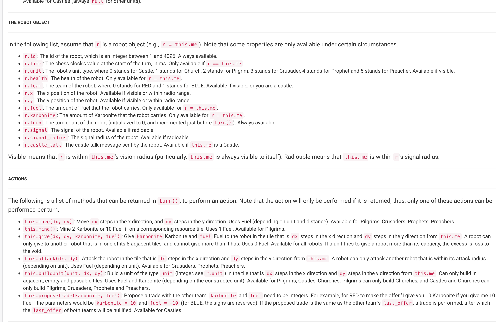
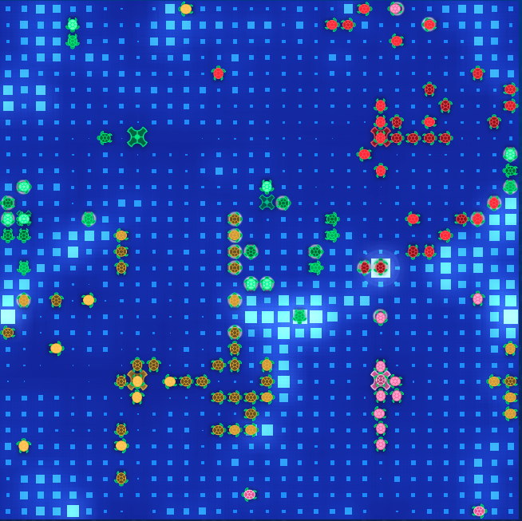

AI Seminar Script
This script and its contents were written by Stone Tao for the AI seminar. 6/30/2019
0. Outline
AI Seminar Script0. Outline1. Introduction / My Background2. What is AI?Factors?3. AI Competitions Part 1 - Battlecode and Halite3.1 General Info About These Competitions3.1.1 How they work3.1.2 Types of BotsRule BasedML3.1.3 How do I get started?3.2 Battlecode3.2.1 What's the game?3.2.2 How do you compete?3.2.3 How to program a bot?3.2.4 Additional Features / Notable Elements of BattlecodeCommunityTime ConstraintsOther Quirks3.2.5 Tips / Strategies / Must KnowsSetting Up and Git or some kind of version controlEarly StageAfter Sprint, before Seeding and QualifyingProgramming Tips3.3 HALITE3.3.1 What's the game?3.3.2 How do you compete?3.3.3 How to program a bot?3.3.4 Additional Features / Notable Elements of BattlecodeCommunityTimeQuirks3.3.5 Tips / Strategies / Must KnowsSetupEarly StageLate StageProgramming Tips3.4 Consensus / Conclusions4. AI Competitions Part 2 - Data Science Oriented4.1 Kaggle4.2 Others5. Resources6. CONCLUSIONLinks and Resources Sent at end of seminar:Final Notes, Links, Resources:
1. Introduction / My Background
My name is Stone Tao, I recently graduated from my highschool, International School of Beijing, and am studying Cognitive Science with specialization in Machine Learning at UC San Diego. I am interested in machine learining and computer science, but also love to do web development on the side and create visuals.
Today, I will primarily be talking about my experience in AI competitions of the caliber and type as MIT's BattleCode and Two Sigma's Halite. I will first briefly explain some details about AI to those new to this concept. Then I will introduce the two competitions I participated in and then talk about my experiences. I will go through the competiton format and some advice I have after competing in them. I will also briefly talk about a more data science oriented AI competition, Kaggle.
First, a brief overview of my background in relation to my education and computer science.
I grew up in Chicago before moving to Beijing in 2011, staying at ISB for the rest of my time there. I have always done some math, although not extensively, and I think that was my favorite subject at the time back when I was a freshman and maybe sophmore in highschool.
Both my parents were both programmers, although my mother has now moved on to pursue the arts more.
Despite that, I actually started doing more programming and computer science a lot later into my education, gaining a lot of interest at the start of 11th grade with previous exposure being a little bit in 10th grade. I started off with a lot of HTML and JavaScript, with Java and Python as well.
So for those who believe it's too late to get started, it's really not. You need effort and passion to place high on these competitions. Of course, starting earlier helps but I believe that the amount of quality effort and interest is the biggest factor.
I did a lot of independent learning, no one really taught me computer science at all. Despite my father actively working in that industry, he at most showed me some of his work and that's it. I learned the basics of Java, JavaScript, web development etc. through online courses and tutorials, reading documentation, other people's code and websites, and through books, articles, and various competitions.
2. What is AI?
So the big question is, what is AI? What's the huge buzz around it?
There's a lot of ways to express what AI is, in my opinion, its just a construct exhibiting some kind of human, possibly beyond human, intelligence. It can be as simple, or complex if you are indecisive, as deciding whether to drink coffee or tea, to the more complex parts of human cognition and thinking, whether it be problem solving, knowledge representation, perception etc.
AI is used virtually in almost every field. Some common examples of using AI are when Netflix suggests you movies to watch, when Instagram filters locate your faces to make you look different and stylish, to self-driving cars. That's the power of AI. In many video games, the non player characters, NPCs as they are so called, run under a predefined set of code usually that determines their actions, a form of AI. Some even take AI in games to the next level, with Google's Alpha Go defeating the world's best go players.
Now you probably might have heard people throw around terms such as neural networks, deep learning, reinforcement learning, etc. etc.
What I just named are just different ways to explore and learn from data. A lot of questions revolve around the problem of classification, labelling, or regression.
There are some other phrases you might've heard such as natural language procession and computer vision. These are just some of the sub-categories of AI, of which the concept of AI is applied to process and understand language in natural language procession, and to process images and make sense of them in computer vision. Some other major categories are machine learning, social intelligence, with things such as speech recognition, facial recognition, and object recognition falling under machine perception along with computer vision.
Factors?
For AI to work well, one of the biggest factors is data. Not enough data makes life harder. It's like being a baby. You have very little experience to learn and recall from, and thus decision making is more rough, estimated, and not as accurate as an adult with more experience, analogous to data, will be able to be.
For machine learning in particular, other major factors are the learning architecture, essentially how does this model learn? Another factor is feature extraction. Often times, the raw data given isn't sufficient or good enough data to allow quality, fast learning. So, code needs to be implemented to extract more useful data to use and learn from. In these AI competitions, machine learning is not always necessary, but many concepts from it are used to help go further in the competitions.
3. AI Competitions Part 1 - Battlecode and Halite
I will first give an overview about the kind of AI competitons I participated in, namely Battlecode and Halite. This year, my team, named Codelympians after our school's programming club, placed 9th overall in the competiton. I also placed 66th overall in Halite, competing against university students and professionals and other high school students last winter break. The following picture is a picture of me and my team on the stage, with one of our teammates joining through video call, the guy on the left of the screen.
3.1 General Info About These Competitions

3.1.1 How they work
The AI competitions Battlecode and Halite are called that way because they work around the same construct. Players compete by programming a bot that takes in data, and outputs decisions. Both of these competitions are sort of like video games, but now played with no human decision making during matches.
This year, both competitions were turn based, where all bots take in all the information they know about the game at that turn, and process it to output their next move.
To determine rankings and the skill level of bots, the submitted bots compete against each other on the game servers. More in depth explanation for how Battlecode and halite do that will come later.
Typically in each match, there's a timing system. If your bot doesn't finish its turn within that time, it clocks out and freezes, or in halite, you automtically forfeit the game. This is to limit computation time so players can't abuse computation and forces players to use more efficient algorithms and make tradeoffs as to which algorithms to use, what strategies to employ.
Additionally, these competitions are open sourced, with the tech stack visible to everyone to see and submit pull requests to provide suggestions for changes. In fact, in Battlecode, one team got a cash reward for submitting the most amount of pull requests to their repository for Battlecode this year. A pull request is essentially telling others what changes you make, and the relevant owners or authors of the repository can review the code, discuss, make edits before finally merging the code to be made public and be actively used in the game.
Often times, these competitions run for several weeks, with halite running for about 3 months.
3.1.2 Types of Bots
Rule Based
Often times, most of the submitted bots are rule based bots. Although not using machine learning, can still be considered a form of rudimentary AI as they make the computer makes its own decisions in the game. This is essentially a basic decision tree, where at each part of the tree, we make a decision such as using an if statement to evaluate a condition, and decide what to do. Mathematical modelling is also used sometimes, helping make decisions.
ML
There are also the machine learning based bots, although I have never heard of this being achieved in Battlecode, but it has been achieved in Halite. This is down to the fact that Battlecode is often fairly complex in terms of rules and the tight timeline makes it harder. The other major factor is that there is amount of severe data limitation, partially due to less competitors compared to Halite, and less matches being played compared to Halite as well. On the other hand, Halite satisfies all the ML enthusiasts by providing an API to download past matches, of which there is a abundance of, allowing them to sufficiently to learn from. Here, competitors will need to find how to best extract features from game data, and use good architecture to learn as best as possible and produce a good bot. The following picture is an example of the machine learning architecture used by the best machine learning bot in this competition. For those interested, I will provide a link to a full writeup by the guy who built this machine learning bot and created this model.
In a similar way, although rule based bots don't necessarly learn by themselves, the same factors impacting machine learning effectiveness apply as well. Humans need data, past matches to learn from and implement new strategies and tweak bot parameters. Humans also need to look at these past matches and figure out what features are useful and how the bot can manipulate data to help it win.
3.1.3 How do I get started?
Really, in my opinion to get a start, you just need to have logic and time and enthusiasm. With time and enthusaism, you don't even need to know the programming language, you will be able to learn the fundamentals quickly and get a start right away. Additionally, without those, its hard to spend time on these competitons and try to learn and get results out. These competitons aren't like USACO, or any of those math olympiad competitions like AMC, AIME, USAMO. A clear difference is that these AI competitions give you a long time frame up to months to work on the bot and submit it, whereas in the other competitions like USACO, you are given a few hours to solve some problems. This is more similar to the USAMTS, USA Mathematical Talent Search, competition, which also gives you about a month to solve 5 problems each round out of 3 rounds total. Additionally, you never know what kind of competition it will be like next time, the rules always change and the format also always changes.
That's just evidence that a lot more work is needed for competing in AI competitions, and you need to be ready to persevere through some grueling weeks if you try and aim for the top.
It helps a lot to have a programming background if you want to go further and do well, but you can always learn on the spot. Additionally, halite this year provided a block based code editor, which is much like MIT scratch, where you build code using blocks instead of actually typing those for loops, if statements, and typing out various algorithms.
Be ready to read and understand text. A lot of people find Battlecode difficult to start because there's a huge start cost. To genuinely have a bot that looks like its doing something intelligent, is a large learning curve, and you will need to spend time understanding the interface through which you can program the robot and interact with the game. Once understood, it should make the implementation of strategies much more easier.
Having some creativity is also good, because these AI competitions aren't as much of a test of how well you know your data structures and algorithms as much more needed in USACO, but a bigger test of how well you can use even just the fundamental search algorithms, data structures like queues, stacks etc. These AI competitions require creativity in how you use the fundamentals and combine them to make your AI become better than others.
I will go into more detail about getting started after introducing the competitions, and provide various resources on how to improve and get better at them.
3.2 Battlecode
The first one I will talk about is MIT's Battlecode, which is what MIT, or at least the organizers, claim to be one of their most hardcore and respected competitions. This will become pretty clear as I explain the circumstances.

3.2.1 What's the game?
Generally, the game often revolves with a 2 player game, where the objective is to destory the enemy's base of some sort. In particular this year, the objective was to destroy all the enemy's castles in a religious themed game on a 2D square grid. You are given resources to help build an army and units to help mine more resources and defend your own castles and destroy the enemy's. In particular for this years Battlecode, teams wrote code that every unit runs, regardless of what kind of unit they are, it was up to the teams to organize their code to handle each case and have decision making for each unit. If two teams had the same number of castles remaining, they determined the winner by who had the most cumulative unit health, and then by a coin flip. The above image is a game between my team and team Dogma, and we employed several strategies here to get to this point and pretty much win that match.
3.2.2 How do you compete?
You first signup for the competiton through their website, battlecode.org. After signing up, you will be given the relevant files and docuemntation to start.
Players compete in double elimination tournaments. Each team playing to a best of 3 matches against their competitor. Battlecode always has several tournaments, a sprint, seeding, qualifying, and finals tournaments. Sprint occurs 7 days after the game specs are released, meaning everyone has 7 days to program a bot for that competition. There's usually a small cash reward to winners. Seeding determines player seeding for qualifying. And usually, the top 16 in qualifiying advance to the finals, regardless of nationality, which was the case this year, although in some years they put a cap on the number of international and US qualifying teams that can advance to finals. US meaning the entire team is composed of us citizens. It's also important to note that MIT battlecode is open to any participant. However, only people who are full time students may compete in seeding, qualifying, and finals.
Normally, there are auto scrimmages, and manual ones between competitors, allowing everyone to test their AI against others and try to get better and learn from past matches.
Competitors in Battlecode, especially the top guys who make finals or were near to finals are often very good at CS. The first place team this year were guys from Stanford CS. You also had Cornell CS, Virginia Tech CS, amongst high school students from magnet schools in the US and several guys who competed at IOI, the international olympiad of informatics and getting medals.
3.2.3 How to program a bot?

In order to build the AI or bot to take part in the match and try to win, you have to use the API, standing for Application Programming Interface, for your language of choice. For security reasons, Battlecode doesn't let you directly manipulate the game going on or else you can cheat. Instead, you make your decisions by running prebuilt functions such as typing move and in parentheses, the x and y coordinate of a valid destination, or typing attack and giving a valid attack location as input. Additionally, you need to program efficient code as unit you control is given a limited amount of time before it will freeze. Each turn in battlecode, every unit receives 20ms of computation time in addition to their starting 100ms. If the computation time used is over how much the unit has, then the unit freezes until it gathers enough time to run again.
3.2.4 Additional Features / Notable Elements of Battlecode
Community
A part of the culture in this competition, there is a competitors Discord channel, a place where everyone can talk freely about what they want, but primarily about Battlecode. People sometimes share their strategies, but obviously the best ones people will keep it secret. The community in my experience was always great, people are supportive and willing to help with a lot of things from programming to talking about the game. You also have direct access to the developers of Battlecode, who are usually undergraduate students at MIT.
For those who make the finals, you get a completely reimbursed trip to MIT in Boston to watch your bot compete live. Additionally, there's a finalist dinner planned, along with many companies that come to watch and host a mini fair to advertise their company to contestants. This year, sponsors included the likes of Oracle, De Shaw and Co, Jabil, HRT, IBM, Disney, and more, primairly companies with a strong need for programmers, whether its for software engineering, data science etc. However, note that these companies supposedly rarely talk to you, especially if your a freshman in college or younger and are in HS. It's practically up to you to actively talk to them, and although very rare, try to land an internship opportunity.
All who make finals are also in the money, and will earn a cash prize, with quantity dependent on their final ranking in the top 16. There's a prize pool total of 50k usd, and I believe first place won 8k. We won a total of $1750 in comparison, 1250 for getting 9th overall, and 500 for 4th overall as highschool team.
Time Constraints
[Image of me lowkey celebrating in Battlecode finals]
Now, to help capture the 气氛, the atmosphere of Battlecode, this is a picture of me celebrating out of surprise and excitement after we won our first match out of the strangest of circumstances, meaning bugs that turned out to be features because they accidentally helped us win. Battlecode is a competiton that gives you just 23 days to write a bot in time for the finals, 19 days for the qualifiers that determine who gets to compete at finals, 21 days if you are in a school in the US. 19 days may sound like a lot, but it's actually very little considering that almost all competitors, and all those who are eligible to fight for a finalists spot, are students in highschool or university.
Talking with the guys from the Stanford team who got first, they were 4 freshmen who had to dig for time to work on their bot in light of the courseload they had as CS majors. My team and I similarly had to dig for time to work on our bot during our final year in HS in a IB program. This led to me doing several all nighters to finish our bot in time. As a result, due to time constraints, bugs are very common in this competition, and sometimes it leads to more excitement as the unexpected happen. In this years finals livestream, I'm pretty sure you can hear the hosts say "this isn't a bug, its a feature" at some point.
Other Quirks
In my two years in competing in BattleCode, I feel like they have a tendency to make a lot of changes during the competition season. Particularly, last year they made a big patch in the game that altered several parameters of units, completely messing up our bots strategy, and If I recall correctly, I think as I was living in China, and due to the time difference, I was asleep when this happened, and had less than a day to make changes. This happened again this year, although for my bot, it was a plus and it happened earlier, some time between seeding and sprint tourneys. This then just makes the time constraints a huge issue. With game changes, you need to be ready to make changes.
3.2.5 Tips / Strategies / Must Knows
Setting Up and Git or some kind of version control
Before doing anything, you should prepare first. For battlecode, they release the specs 7 days before the first real test of your bot's capabilities, the sprint tournament. My team first read the specs and API, tried to come up with strategies. Another very important part of the early stage, is building a good foundation.
For example, as this years Battlecode revolved around an isolated paradigm, where each unit in the game ran the same code in seperate threads that couldn't communiate with each other with variables, but must use the communication API provided by battlecode, it made sense to generalize the main script that was run, which was robot.js. By generalizing, that meant all the functions contained in the main script, variables etc. were common variables and functions that could be used by any unit. With seperate files, I put the logic for each type of unit and inside each, followed a similar structure in processing a turn in the game. To make sure everyone on the team was on the same page, I wrote the rules and structure onto a markdown document here, I will send a picture of it soon. By writing a strong foundational base for the bot, this made the implementation of future strategies really easy, as we could easily call past functions that we wrote in the foundations to do what we wanted. This sped up development, crucial for a time constrained competition, and especially crucial for battlecode as any changes to the game wouldn't significantly hamper our development speed. This flexibility was crucial.

In addition to building a strong foundation for the bot, version control is a must have. My team used Git to maintain this. Version control helps track changes to the code over time, which is important especially when working as a team as now we have a platform to share and merge code without having to send files to each other each time we make an update. Additionally, in events where our new code is buggy, we can easily revert to a past version of our bot, or look at the changes we made to help easily debug. In the following picture, you can see me and my teammate tom making commits to our code, many commits in one day, with 2 days before finals submissions were due. The red and green lines highlight our code changes, visualized through GitHub's platform and app. Also if you do this, make sure you don't accidentally set your code's repository public to everyone, or else people could potentially steal your code.
Early Stage
Early into the game this year, most competitors are just feeling out strategies they think work, and what they see other people do through scrimmaging. Although its nice to win sprint tournament, I would think more long term and work towards building the foundations still in preparation for seeding and qualifying. Several competitors built what were known as rush bots, where they built attacking units right away and tried to demolish the other castles as soon as possible. This was a extremely viable strategy for sprint competition, and was very hard to beat, but it was soon nerfed, and made no longer viable through game changes, the aforementioned change I talked about earlier. If i recall correctly, the bots that did well with their rush bot, ended up falling behind later and didn't do as well in seeding. Basically remember, early game, any strategy that is too strong will be noticed by the devs of battlecode, and probably nerfed, meaning the devs will do something to make that strategy weaker. So prioritizing building those foundations is important.
For example, one important foundation I worked on early on was making a good, stable communication setup as the units we controlled don't share global variables with each other, and can only communicate through battlecode's API. The game rules limit the communication quite a lot. It costs resources to communicate, a cost that scales up the farther you try to communicate, plus, you don't communicate with strings or any number, you can only communicate by sending an integer from 0 to 2^16-1. Additionally, only the castle units can communicate as far as they want for free, but are limited to sending an integer from 0 to 2^8 -1.
After Sprint, before Seeding and Qualifying
After sprint, maybe give it a few days, the game rules and parameters are likely to be more settled, and this is the time when common strategies start to appear that are less likely to get nerfed. One common adaption was using a lattice of units to defend castles, although as players approached qualifiers and finals, strategies were born to deal with the lattice easily. Hopefully at this point, you will have a strong foundation by now, bugs should be less common, and its more strategizing, optimization and less debugging and coding. For me, at this time I was mostly just reading code, strategizing, and figuring out the best parameters and best methods to do certain things.
Additionally, make use of the Discord channel, talk about strategies, and maybe try to subtly find out if your strategy has a counter, meaning that it can be beaten by someone else. This is one method of discovering pitfalls in your bots code that could cause you to lose. The other method is obvioulsly through scrimmaging. Additionally, if you have a super special, good strategy that you are quite sure very very few people use, don't put it in the bot you upload for scrimmages, save it for seeding or even save it all the way until qualifiying. This is what one team did, and it definitely helped them make finals. The last thing you want is all your hard work towards developing the strategy suddenly gone as people borrow it and use it in their bot. Obviously this only applies to strategies that are obvious to see, such as that lattice defence idea. Other strategies might involve mathematical modelling that is harder to steal from. In particular, I didnt realize this one team used calculus to help his bot create a defensive or offensive line for his units, although the effectiveness might be a little bit debatable but the idea was nice.
Right before seeding, or right before qualifying
Right before any tournament, especially the important ones, you have to make SURE, you upload the bot you want, but also that the bot you want is STABLE. Last year in battle code 2018, luckily it was only for sprint, but I accidentally uploaded a buggy bot, that crashed upon start up. Make sure you run tests before uploading. Version control comes very handy here as well.
There are also livestreams of each tournaments hosted by battlecode devs and staff. Theyre usually hosted on twitch tv. Watching your bot compete live is nice, but not needed as you can just watch replays at some other time. Additionally, Battlecode provides you with all the replays of the matches during the tournament in case you want to rewatch from your computer and not from twitch.
Programming Tips
Program for readability. I highly doubt that cutting your function name from lets say attackNearestEnemyUnit down to the acronym ANEU, will make your code run any faster, perhaps reduce file size but theres no need to do that anyway, there are no limits to bot size as far as I know, and if there are, its hard to reach. Readability helps not only your teammates understand what it does, but helps you when you need to debug something or want to reuse a function and don't remember what it did. Comments are also extremely helpful, but as I say this, I realize I'm being quite ironic. At the start, I programmed for readability, but as time became tighter, deadlines closing in, I prioritized typing faster over readability. That's why, there's a lot of confusing code in our final bot code. In hindsight, its ok to prioritize faster typing over readability, but just remember to fix the readability issue in the future if possible.
Some key algorithms that are very important and must have if you even want a chance at finals probably is a path finding algorithm. A star is the most popular I believe as it is effective for path finding, and very fast, and a mix of other breadth first searches, depth first searches will help your bot do what you want, and in under the run time limit for each unit you control. At the end of this seminar, I will post links to various resources I mention in my seminar, from links to the competitions, to my teams code, to resources to learning and understanding algorithms.
In particular, my team used a different approach for path finding, using something called the L1 path finder. Long story short, it precomputes paths fairly efficiently and stores it, so getting new paths from A to B is faster than A star. However, in hindsight, our team should have used A-star each time we wanted to find a new path because the precomputation time for L1 is over the initial 100ms given to each unit, so we our units literally had to wait a few turns before being able to use the L1 path finder or else it would freeze. L1 path finding is too complicated for our team to program, so we ended using a outside library to help with it, and we configured it to work with our bot more efficiently.
The final point for Battlecode is time management. I have to stress this point regarding time a lot throughout this seminar for Battlecode because it was a huge factor for me and a huge one for quite a few other competitors aiming to place high. We were so time strapped that we have to CHOOSE which strategies to implement. By the time final submissions closed, we still had strategies we had yet to implement. This is partly due to having less programming experience, 3 out of 4 team members who actually program, the other guy did strategy for us, and a lack of time, especially for my teammates who were a bit more busy with school work than I was at the time. In particular, right before the qualifying tournament deadline, I was the only one working on the bot, and I had about 10 minutes left to implement maybe one more important strategy out of a few. This strategy was just an endgame decision that forced my bot to expend as much of its resources it can to building units in the case that the game might be tie broken by unit health.
3.3 HALITE
I will now introduce the second AI competition I participated in, Halite, the season 3 edition, hosted by Two Sigma.

3.3.1 What's the game?
This year's halite revolved around mining a fictional resource called halite from a 2d grid ocean that wraps around itself. The wrapping is basically saying that the right edge of the map is followed by the left edge of the map, the top edge is followed by the bottom edge, creating a sort of toroidal shape. Whoever mined the most halite in a match won. Players controlled ships in the shape of turtles that could mine halite. In this turn based game, a turtle standign still will always mine the tile they are on, and collect a quantity of halite proportional to how much is on that tile. Moving from tile to tile also costs halite, proportional to how much is on the tile. After collecting halite, ships have to drop it off at a shipyard or dropoff site. Every player starts with a shipyard and one ship, and only the shipyard can spend haltie to produce more ships. Ships can also spend even more halite to build a dropoff location. Another mechanic is that ships mine 200% additional halite to what they originally mined if there are 2 or more enemy ships nearby, called an inspiration buff. The final mechanic is that ships can collide with each other if they occupy the same position at the same turn, regardless of which team, u can even hit your own ship. Doing so will drop all halite in all colliding ships into that tile.
3.3.2 How do you compete?
Prior to the finals event, of which every participant is automatically a part of, there's only only scrimmaging and live ranking using the TrueSkill algorithm to best rank players to their latest bot's ability. The special part of halite is that it has 2 player games and 4 player games, with game winners decided after the turn limit is up based on who has the most halite. Additionally, your bot only has 2 seconds each turn to finish computing its decisions before it times out and you automatically lose.
To compete, you just need to submit your folder containing your code, following the structure as required for the main file, to the competition website, and you can sit back and watch your bot compete live as soon as possible. Depending on game results and the number of games your current bot version has played, you ranking will change accordingly, with the change decreasing with the number of games it has played. There's a deadline to submit the final bot, of which after it is passed, the final games determining final rankings are played.
3.3.3 How to program a bot?
Similar to Battlecode, your bot plays in the game through the API provided by Halite. However, this API is much more flexible as one of the only things needed by the Halite game is an array of string commands that are then parsed and processed to update the game. Halite and its community have made starter kits for various programming languages, complete with a rudimentary path finder and collision avoider, and some other simple code to make the programming process easier and more readable. There are very few commands you can give. For the shipyard you can either build a ship or don't. EAch ship can stay still, head one unit north south east or west, or build a dropoff site. It's very simple and is one of the reasons why machine learning is possible and much more practical to do in Halite than in Battlecode. Also, Halite is open to anyone, so you have highschool, undergraduates and graduates, and even professionals from various companies such as Google, Nasa and Two Sigma itself to name a few. As far as I know, high school students made up the smallest percentage of participants. The following is a screenshot of part of the javascript API for halite.

3.3.4 Additional Features / Notable Elements of Battlecode
Community
Like Battlecode, Halite also has a discord channel and community on there. I didn't realize they had this until very late, and also discord is hard to access from within China, so I never participated in the discord channel. However, many other competitors say it was very helpful and I highly suggest making use of it, I'm quite sure its just as good as the battlecode one. In addition, Halite had a online forum this year, where people discussed about reinforcement learning strategies for halite, to trying to crack what makes the final winner of halite 3, Teccles, so good in the game.
Time
Like battlecode, this competition is time limited, however this one spans 3.5 months. Time, at least for a more rule based bot, is not the biggest issue for halite 3. I was able to get my results by actively programming the bot from December 17 to January 7th, about 22 days. I stopped earlier due to significantly slower progress in progressing in rankings and because Battlecode was about to begin. Howeve3r, if you are building a machine learning bot, time you might need more if not all of the time.
Quirks
Different to Battlecode, Halite is a relatively much more stable AI competition than Battlecode. Quoting a dev from Battlecode, this is because Two Sigma hires like a bunch of interns being payed $50 an hour to work on this competiton.
3.3.5 Tips / Strategies / Must Knows
Setup
There are quite a few similarities with Battlecode, mainly being the setup part. Although for halite 3, you run only one instance of your code to control all the ships and the shipyard, which I prefer much more because dealing with communication in Battlecode was such a hassle, although it adds a decent depth of complexity to gameplay. One example was that I had to figure out a way to tell castles, who were isolated from each other, the locations of each other as fast and soon as possible.
Anyway, version control again is a must have for the exact same reasons: debugging, and stability
Building foundations is generally helpful, although I don't think I really did that much of it other than organizing seperate files for different sections of code if it was large and significant enough such as my mining code and vision code that processed what my bot saw on the map and returned features retrieved and calculated out of it. Additionally, I competed as an individual for this one, so readability wasn't as needed, and organization less so, although this isn't an excuse to completely ignore good programming practice.
Early Stage
For me, early on I was spending most of time just implementing the common strategies and making sure they work well, such as basic mining code to mine efficiently, efficient and stable navigation code to make sure my ships don't collide into each other, crash and lose all the halite and the 2 ships, while still smoothly navigating where they want as fast as they want. Good navigation code, basic mining, and some implementation of optimizing where to build dropoffs, as simple as telling your ship to build a dropoff around a minimium number of halite, x distance away from your own shipyard and other dropoffs. Just those 3 things and few other minor strategies were enough to rank me top 10% amongst all competitors. I haven't even implemented more optimal mining code, or take consideration of the 200% inspiration buff to mine even more halite, or consider having my ships try to attack enemy ships with more halite in its cargo and sink it. This is just an example of how important navigation code was for this game.
Again, it's always good to watch past replays, of not just your own bot, but the top bots, which are publically provided by Halite. I learned a few good strategies from watching them.
In addition to the programming, I also setup some other helper tools to help me see how my bot is doing and if my new additions to my bot are helping or not. I had my own game manager, and with a bit of bash scripting and some html and javascript, I could automatically run games while I sleep, and wake up to a dataset of hundreds, perhaps of thousands of self-run matches. Through my own web applet, I could analyze the results of the matches and analyze what my additions did. However, if you look at other players, they had much more complex so called "battle station" setups to help analyze their bot. My setup was extremely simple. It just allowed me to self run matches, and recorded the scores and win rates between my own bots, and stored local replay and log files.
Late Stage
By this time, hopefully majority of the major strategies are implemented. It's now really about tweaking bot parameters, and optimizing the various values used to help decide on what commands to give to the ships. Although optimization isn't the biggest factor in doing well, as the winner of Halite says that he only did light parameter tweaking. However, optimization will still help, and help plug in any gaps left behind by poor strategy or unrealized opportunities. Other players have used machine learning to help with this, using ML to help optimize their bots parameters.
Similarly, always test before you submit your final bot.
Programming Tips
This year, the map was square based with no obstacles, meaning there isn't a real need for an advanced path-finding algorithm, although perhaps you might want to add code to have your ship avoid areas with a lot of enemies before deciding which path to take. A greedy algorithm that makes your ship go in the direction that takes it to the tile closest to the target tile will be the most optimal path in terms of turn time. You could also do a backtracking algorithm to find which one of these optimal term time paths has the lowest halite cost caused by moving on the tiles, this was something I implemented.
A lot of this game required, in my opinion, less programming prowess, so less need to know the most efficient algorithm or data structure for everything. This is mainly due to the 2 second limit being rather high, especially for rule based bots. My code consistently ran under 200ms usually. This 2 second time limit is set mostly for machine learning bots, which take up more computation time usually. However, it's always still good to make your code efficient as this will help you bug test faster, instead of waiting for several minutes for a local match you might want to run to test your bot to finish.
Then again, it's probably good that you understand algorithms such as breadth first search, BFS, if you want to quickly find the nearest something, whether it be the nearest enemy ship, friendly ship, dropoff etc. A quick cheat though that I don't think that many people used, and honestly for halite you don't really need it, but a BFS algorithm can be simulated with a lookup table. Instead of determining the next tile to check when searching and using a queue to make it faster, I could just use the lookup table to determine it, which is even faster. Due to the nature of the 2d grid and no obstacles, this is possible. To create this lookup table, I pre-generated the table elsewhere with a BFS algorithm and each entry of the lookup table is basically an array of tiles the BFS algorithm looks at for a distance equal to the index of the entry in the table. The full code is in the search.js file in my halite bot code, all public on my github.
There are many other programming strategies, and I would suggest reading the code of other top bots from this year's Halite, and Battlecode and looking at how they adressed various problems in the game and implemented strategies. I will send a compiled list of links and resources at the end.
3.4 Consensus / Conclusions
Here I will conclude on these two AI competitions.
Some key similarities is the use of an API to access the game, which is common in not just these two competitions, but in practically any other one I've seen. They don't also have to be turn based as well.
From my experience, the biggest points I feel the need to emphasize to do well in halite or battlecode is
Prioritization, especially for Battlecode. Prioritize what you believe will bring the most success, and avoid the largest pitfalls your bot.
Be very familiar with the basics. if you are spending a good deal of time, say around 50%, typing and looking up documentation for the language you are programming in, it will make things harder as that means less time for planning and strategizing. Of course, you can still do well to a certain extent, but you may need to spend more effort and time to get as far.
Using some form of git control is very helpful. If you aren't familiar with the command line tools for using git, such as through terminal, I suggest setting up a github account and using GitHub desktop to do version control, it is well made and its easy to see how your code has changed over time.
4. AI Competitions Part 2 - Data Science Oriented
4.1 Kaggle

Kaggle is essentially an online community, group of data scientists, interested in getting meaining out of data. It is currently owned by Google. As I said before, having data is crucial to any kind of AI, whether its machine learning, or a rule based bot for halite or battlecode, you need data to work with. Kaggle allows people to find and publish their own datasets for various things from stock market data, Australia's 2019 election tweets, to an artificial lunar landscape dataset. You can use these datasets to make your own predictions and essentially learn more about the world and AI!
Kaggle also offers competitions, with large companies often giving you datasets and ask you to predict a result or label of a test dataset and whoever gets the most correct, climbs higher on the leaderboard. For example, Two Sigma has a competiton asking people to use news analytics to predict stock performance, with a prize pool of $100,000. If you place high enough, you will be eligible for the prize pool. This is basically data science, people will often use different machine learning libraries and tools to extract and analyze data and run machine learning algorithms to most accurately make predictions.
What's also really great about Kaggle competitions is that they also help teach some machine learning. There are some tutorial datasets like predicting the number in a image, to predicting whether someone on the titanic will survive given a whole host of features from name, family size, ticket fare etc. They provide detailed explanations of how to achieve those high prediction accuracies
4.2 Others
There are several other big data science / AI competitions out there, I think they are often hosted by large companies like Microsoft and IBM. However, they are much less suitable for an individual to compete and very difficult at a highschool level and even college level to do well in, seeing that other competitors consist of people working in companies that work in the AI field. There is the AI for good challenge by Microsoft, and if you search AI challenges on bing or google, you will find a whole host of competitions. But these are most suited to those who somewhat well versed in AI technology I believe.
5. Resources
For Kaggle, I am also relatively new, but so far I have been going through some of their tutorials and using the tensorflow machine learning library from Google to do them. However, before going to Kaggle, I highly suggest learning python first. Python is one of the most used language for data science, with lower level languages like C and C++ usually used to build the machine learning libraries so that high level languages like Python can efficiently run algorithms and allows for much faster building of things like neural networks instead of having to deal with all the low level code, memory managment etc. Additionally, Python has the largest community and libraries for AI so it is often most preferred.
JavaScript is also possible through various libraries such as tensorflow for javascript. But it is less supported and in my opinion, its more suitable for building small web apps that that utilize some machine learning. In my experience, this is actually how I practiced and learned some basic machine learning algorithms such as K-means, and practice using the tensorflow library. I created a website with a collection of visualizers that intend to help visualize how the computer is learning from the data. Essentially, I suggest learning through doing. For me, I auto generated random data points and learned from it. You could also use your own resources or Kaggle's datasets and try to practice making predictions from them. Or use your own data! Have a lot of family photos? Try and train a neural network to practice recognizing which photos are those of your family, and which photos are not, although this is probably kind of hard for those new to machine learning. I strongly advise that while learning, try to make it fun or interesting in some way. Enthuthiasm always helps speed up the learning process and help you persevere longer.
For Battlecode, Java seems to be always a language offered to compete in. This year there was also python and javascript. For Halite, any language was offered to compete in. Codeacademy.com is a good place to start learning the basics. After that I suggest trying some simple programming problems on resources like leetcode.com or hackerrank.com. You don't need to try and do the difficult problems, you just need to be at least familiar with some of the basic algorithms, the use of arrays, objects etc.
Some more advanced algorithms that are a must have are A*, of which I will send a excellent link about it in the chat later. Additionally, I will compile a list of algorithms and data structures used in my bot and some others that other people used, in order of increasing difficulty.
For battlecode and halite, there is a culture of posting "post-mortems", which are essentially a player or team's report on their bot and adventure through the competition. People usually publish their code along with it for anyone to read and learn from, also just showing how great of a community this is for learning programming and AI. The best post-mortems will contain details on many things from every strategy used in the bot and how it was achieved in code to the intuition behind some strategies, code etc.
Although these competitions don't start again for a while, you can run battlecode and halite games yourself. I will provide links to their github pages and you just have to follow the instructions to get them installed, find someone's bot code or make your own, and run them.
6. CONCLUSION
So that's it for the seminar today. I hope you guys are now more familiar with the AI competitions and the various tips and advice given. I will send out links to the resources soon and I will also provide a link to my script for this seminar today. Afterwards, I will be answering any questions you guys have. I still would like to add some final remarks
As hot as computer science is right now, I think people do the best when they are given the freedom to choose what they wish to pursue. Eventually, they will naturally find a field they would be fine spending 24 hours working around, to work on something while even on the toilet or while they sleep. So I just want to let parents know that as a student myself, to be free to decide what to major in, to decide how I use my time to study topics and in what order, is an amazing feeling.
Pushing your son or daughter to pursue computer science or a major they don't wish to pursue is a step in the wrong direction. I realize, and I hear this a lot from when my father gives advice to other young adults, that not all majors will bring a career that makes life easy. Art majors are infamously known to have it hard when it comes to careers and supposedly often have the talk, where they discuss with someone if they should continue to pursue the arts, possibly be very poor and live a rough life, or find a career elsewhere and have a stable income. In the end, it comes down to how passionate you are. If you are extremely passionate about art to the point that you are willing to accept worse living conditions, less money, then don't give up, you are the kind of person the world needs. If you can't seem to reach that level of passion, maybe try and find something similar or related and pursue a career there.
Saying this, I also don't discourage parents from pushing their sons and daughters a little, but I strongly suggest that this kind of pushing action should be reduced as they grow older, grow more independent and fully capable of deciding for themselves what's right. In a way, it's a risky way to approach it, but honestly as someone who grew up freely and unbound, I took in a lot of happiness and got so much better at what I was passionate about. Sometimes, risks are needed. Whether it was the risks I took this year in implementing new strategies for the Battlecode bot the day of final submission, or my friend who tried to begin a startup that aimed to use technology to invest in stocks to compete with the likes of Two Sigma, there are always pros and cons and always something learned.
Ok that's it, I will be sending out resources right now. I will also send them again at the end of the seminar after the questions so you guys don't need to scroll all the way to the middle to find it.
I am now opening the seminar to questions and will also answer some of the questiosn submitted beforehand.
Links and Resources Sent at end of seminar:
Final Notes, Links, Resources:
Full script and the following resources can be downloaded here / 完整脚本以及以下的资源可以在这里下载:
Battlecode (Around January - February): Link: http://battlecode.org/ Github: https://github.com/battlecode/battlecode19
Halite (Around November to January): Link: https://halite.io/, Results/最后成绩: https://forums.halite.io/t/halite-iii-its-a-wrap/1375.html Github: https://github.com/HaliteChallenge/Halite-III, https://github.com/HaliteChallenge Getting started with your own bot and trying the game yourself: https://2018.halite.io/learn-programming-challenge/
Kaggle (Data Science Oriented competitons): Link: https://www.kaggle.com/
My Github repository for: Battlecode: https://github.com/StoneT2000/BC19/ Halite: https://github.com/StoneT2000/Halite3-JS My Halite Post-Mortem: http://stonet2000.github.io/postmortem
Excellent postmortem to read about how this player went about competing in Halite: https://recursive.cc/blog/halite-iii-postmortem.html; He went on to place 3rd overall.
Rest of the Halite ones can be found here: https://forums.halite.io/t/collection-of-post-mortems-bot-source-code/1335.html
Writeup of Machine Learning bot in Halite: https://stakernotes.com/diamond-ranked-ml-for-halite3/
Some good Battlecode Post Mortems from this year's competition: http://jerrymao.net/blog/battlecode/ http://battlecode.org/oak-postmortem.pdf
Good resources for learning computer science / 学计算机的好资源:
Fundamentals of a programming Language / 程序语言的基础: https://www.codecademy.com (Python, Java, JavaScript, C++, HTML etc.) https://docs.python-guide.org/ - Good guide to get a Python environment setup properly, and also learn some best practices for python https://javascript.info/, https://developer.mozilla.org/en-US/docs/Web/JavaScript/Guide - Excellent guides for learning JavaScript https://www.tutorialspoint.com/ - Lots of languages taught, simple and fast. Data structures and Algorithms as well
^ The above guides I highly suggest to use and make a small project while you learn. For me, it helped me get a lot better at python, and web development.
Introduction to Algorithms by Cormen, Leiserson, Rivest, and Stein (Book / 书) - Very rigious mathematical view of data structures and algorithms, and its very big.
Leetcode and Hackerrank are good places to go and practice solving programming problems. https://leetcode.com/ https://www.hackerrank.com/
Learning Machine Learning and AI / 学Machine Learning 和 AI:
https://www.tensorflow.org - Tensorflow (Google's ML library): They offer tutorials here / 他们提供tensorflow + keras API 的教程: https://www.tensorflow.org/tutorials/keras
Coursera also offers some good online courses on ML / Coursera 也有好的ML 网上课程 https://www.coursera.org
MIT Open Course Ware (OCW) https://ocw.mit.edu/index.htm MIT opens up almost all of their classes and their syllabi, content, and tests. They have course content on ML, AI and various other important math courses such as linear algebra etc.
Other CS Resources:
Brilliant resource for learning about A* (A-star) path finding algorithm: https://www.redblobgames.com/pathfinding/a-star/introduction.html; It takes you through some simpler path finding algorithms before diving into A*
L1 Path Finding: https://mikolalysenko.github.io/l1-path-finder/www/ - Very complex
Important algorithms, data structures, concepts, mathematics used in my bots and some other nice ones in order of difficulty. In green: concepts, in orange: data structures, in blue: algorithms, in purple: math/code for math highlighted in purple. Those in bold are what I actually used or attempted in my code at some point / 在我AI里使用的和我推荐的重要算法，数据结构，概念，和数学，按难度来排序。蓝色：算法，橙色：数据结构，绿色：概念，紫色：数学/数学代码。那些以粗体显示的是我在AI比赛里用的。